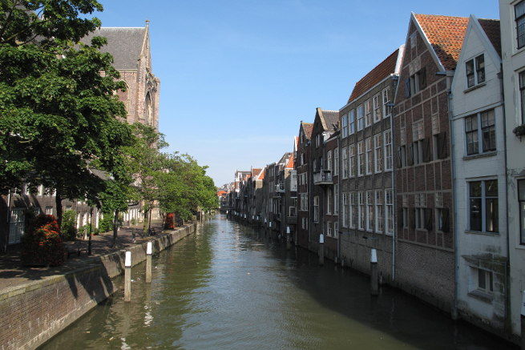

Working with local and organizational culture in Disaster Risk Reduction
EDUCEN is an EU-funded collaboration and support action focussing on the role of culture in disaster management and risk. It is a consortium consisting of 10 participant organizations from 7 different European countries.
Case studies See all
-

Dordrecht
Excepturi sint occaecati cupiditate non provident, at vero eos et accusamus et iusto odio..
Read more -

Istanbul
Excepturi sint occaecati cupiditate non provident, at vero eos et accusamus et iusto odio..
Read more -
L'Aquila
Excepturi sint occaecati cupiditate non provident, at vero eos et accusamus et iusto odio..
Read more
-
About EDUCEN
EDUCEN is an EU-funded collaboration and support action focussing on the role of culture in disaster management and risk. EDUCEN is a consortium consisting of 10 participant organizations from 7 different European countries.
Central to the EDUCEN project is the idea that cultures, the ’soft infrastructure’, hold important assets to disaster-affected communities; disaster managers and disaster-affected people alike. Our premise is that culture and cultural diversity are not just a challenge creating barriers, but are in fact reservoirs of assets that people have available to them to prevent, mitigate, prepare for, cope with and adapt to disaster risks– cognitively and practically.
The overarching aim of EDUCEN is to build on existing European networks and with them identify actions to build and support culture and cultural diversity. The networking and support actions, which are central in EDUCEN’s approach, will be directed at increasing the effectiveness of DRR design by including culture as a valuable component in all phases of disaster risk management: prevention, mitigation, preparedness and response and reconstruction.
This will contribute to more resilient cities that are able to meet the needs of their various cultures and subcultures during disaster relief hopefully leading to a lower number of fatalities while also reducing reaction time when disaster strikes.
Read more